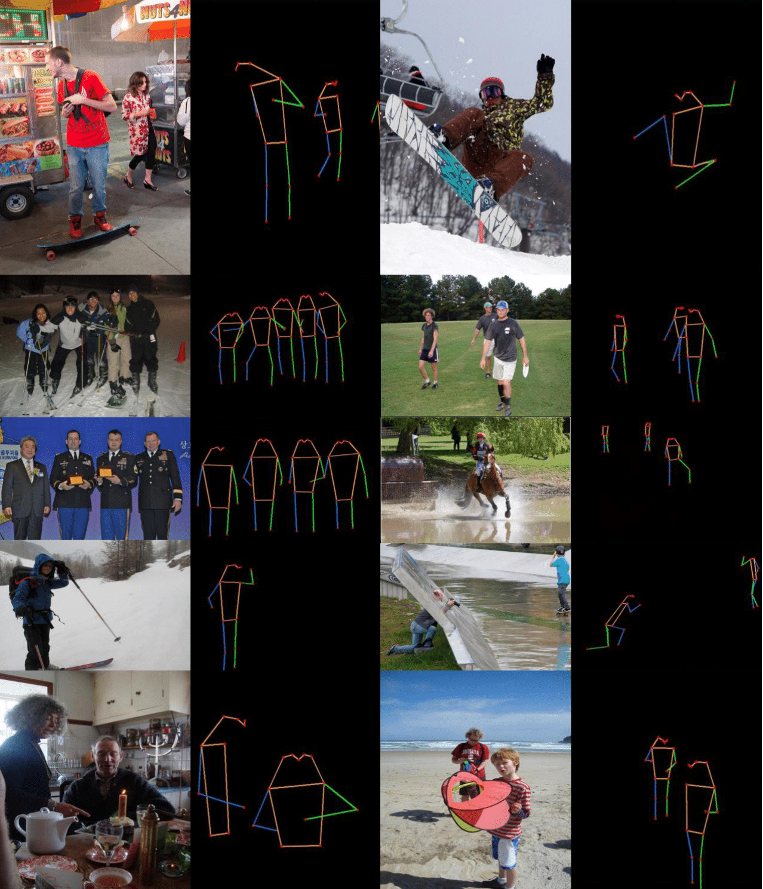

One single model solves multiple perception tasks, on par with SOTA.
| Monocular Depth Estimation | Normal Estimation | Entity Segmentation |
|---|---|---|
| Pose Estimation | Semantic Segmentation | Point Segmentation |
|  |  |
|
We achieve results on par with SAM-vit-h using only 0.06% of their data (600K vs. 1B pixel-level annotated images).
SAM-vit-h only shows a clear advantage on certain out-of-distribution datasets that are outside the scope of our model's training, such as WoodScape fisheye dataset.
|
1-point Comparison
Input-Ours-SAM |
5-point Comparison
Input-Ours-SAM |
|---|---|
DICEPTION preserves fine details in segmentation, such as hair.
DICEPTION achieves good performance without carefully cherry-picking extremely high-quality data or by using an exceptionally large amount of data.
Even with minimal trainable parameters (~1%) and a very small dataset (50 data samples), the finetuned model produces high-quality results.
Image Highlighting
Medical Segmentation